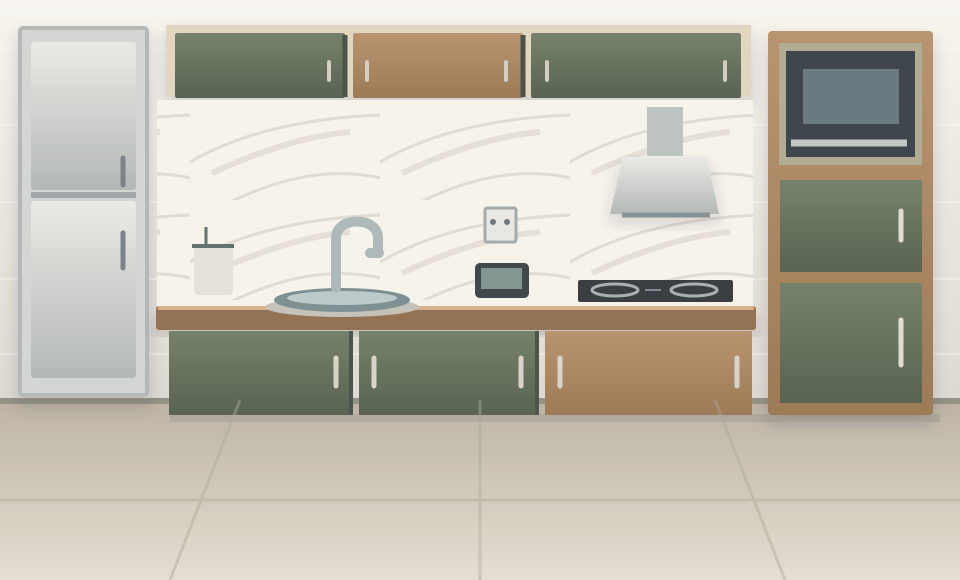

SEGUNDA-FEIRA, 2 DE NOVEMBRO
Bom dia, Ana.
Três ações aproximam suas vistorias de um laudo completo.
PRÓXIMOS PASSOS
3 pendênciasPendências que pedem ação
Pedir vista do teto e do piso da cozinha
Entrada · Apartamento 204 · sem essas vistas, a saída não poderá compará-los.
Cobertura incompletaRevisar 2 observações sugeridas
Entrada · Apartamento 204 · confirme o escopo e os atributos visíveis.
Revisão da IAConferir laudo antes de publicar
Saída · Casa Jardim · um item sem base de entrada precisa aparecer no PDF.
Pronto para conferirVISTORIAS RECENTES
Acompanhe cada etapa
| Imóvel e finalidade | Etapa | Cobertura | Próxima ação |
|---|---|---|---|
| Apartamento 204Entrada · 31 out 2026 | Em captura | 13 de 21 com evidência | |
| Casa JardimSaída · 30 out 2026 | Em revisão | 18 de 20 com evidência | |
| Loft CentralEntrada · 28 out 2026 | Publicado | 9 de 9 com evidência |
VISTORIA DE ENTRADA / APARTAMENTO 204
Checklist da cozinha
Registre o estado atual e mostre o que ainda precisa ser visto.
Visão do participante no aplicativo de captura (PWA)
No produto, esta tela fica no acesso por link do participante, sem o menu do painel. O gestor acompanha a mesma cobertura no Dashboard e solicita recaptura de lá.
Vista complementar recomendada
Uma foto ampla já conta a história. O detalhe completa a prova.
Paredes, armários, bancada, pia, cooktop e tomadas estão visíveis na foto F01. Teto e piso ainda precisam de uma vista própria; sem elas, a vistoria de saída não poderá compará-los.

COBERTURA DO AMBIENTE6 de 8 componentes com evidênciaComparáveis na saída: 6 de 8. Cobertura e conservação são medidas diferentes.
COMPONENTES
Foto F01O que foi observado
Paredes e revestimento
ObservadoRevestimento claro visível na região enquadrada.
Armários superiores
ObservadoFrentes verde-oliva e amadeiradas; faces externas visíveis.
Armários inferiores
ParcialPortas visíveis; interior e ferragens não avaliados com as portas fechadas.
Bancada, pia e torneira
ParcialVisíveis na foto; partes da superfície estão encobertas.
Cooktop e depurador
ObservadoIdentificáveis na vista frontal; funcionamento não testado.
Pontos elétricos
ParcialTomadas aparentes, sem teste de funcionamento.
Teto
A foto atual não mostra o teto. Fotografe a vista superior.
Piso
Sem vistaA foto mostra só uma faixa junto aos armários. Fotografe o piso inteiro ou registre o motivo.
Nota de voz é complementarUma declaração não substitui observação visual.
CONFIGURAÇÃO / ORGANIZAÇÃO
Preferências da IA
Escolha o escopo de análise e a forma de apresentar as observações.
Dois objetivos, uma experiência clara
O checklist descreve o estado atual. A comparação usa uma base aprovada e procura diferenças sustentadas por evidências dos dois momentos.
O que incluir no checklist
A escolha vale para novas vistorias desta organização e pode ser especializada por modelo.
Análise de fotografiasDepende do consentimento de análise por IA de cada participante. Sem consentimento, o laudo mostra “não analisada por IA”, nunca “sem alertas”.Consentimento
Notas de vozSeguem a política de voz da organização, no Admin, e o consentimento do participante. Entram como declaração e não mudam o escopo.Política de voz
Como entregar a leitura
O modo resumido mantém danos, limitações e itens não avaliados.
Formato do resumo
CONFIGURAÇÃO / ORGANIZAÇÃO
Modelo de laudo
Defina a identidade do documento e confira uma prévia antes de emitir.
Quem emite este laudo
A marca aparece em novas versões; documentos publicados preservam sua composição original.
H
Horizonte ImóveisLogo demonstrativo · proporção preservada
O título acompanha a finalidade: checklist ou comparação.
Cor de destaque
Como organizar o conteúdo
LAUDOS / VISTORIA DE ENTRADA
Laudo descritivo
Uma leitura completa do estado observado, com ressalvas e evidências.
IInspection
HORIZONTE IMÓVEIS · UNIDADE CENTRO
LAUDO DE VISTORIA
01 / DEMONSTRAÇÃOEstado atual do imóvel
Apartamento 204 · Vistoria de entrada
Data declarada: 31/10/2026 · Emissão demonstrativa: 02/11/2026SÍNTESE EXECUTIVA
Uma cozinha documentada, com vistas ainda pendentes.
Foram previstos 4 ambientes; 13 de 21 componentes têm evidência. Na cozinha, 6 de 8 componentes previstos têm evidência suficiente ou parcial. Não há conclusão de integridade para as áreas fora do enquadramento.
6 / 8componentes com evidência
na cozinha
na cozinha
Limitações a apresentar ao destinatário
Teto e piso da cozinha estão sem vista, e o interior dos armários não foi aberto. Sem essas vistas, uma vistoria de saída não poderá compará-los. A data de captura não foi informada neste protótipo; conferir antes da emissão.
01
AMBIENTE
Condição visual atualCozinha
Vista frontal com revestimento claro, armários superiores e inferiores em verde-oliva e acabamento amadeirado, bancada, pia, torneira, cooktop e depurador visíveis. As descrições se limitam às faces enquadradas em F01.
01
Superfícies
F01Paredes e revestimento
Revestimento claro com veios na região enquadrada; sem dano evidente nessa vista.
Paredes fora do enquadramento não avaliadas.Confirmado02
Superfícies
—Teto
Sem vista nesta vistoria.
Pendente: fotografar a vista superior ou registrar o motivo.Sem evidência03
Superfícies
—Piso
Aparece só uma faixa junto aos armários; sem vista suficiente para avaliar.
Pendente: fotografar o piso inteiro ou registrar o motivo.Sem evidência suficiente04
Marcenaria
F01Armários superiores
Frentes verde-oliva e amadeiradas; sem dano evidente nas faces externas enquadradas.
Não avaliado: interior, ferragens e funcionamento.Confirmado05
Marcenaria
F01Armários inferiores
Portas verde-oliva visíveis; sem dano evidente nas faces externas.
Interior e ferragens não avaliados: portas fechadas.Sugerido pela IA · não revisado06
Bancada e hidráulica
F01Bancada, pia e torneira
Bancada com acabamento amadeirado e área da pia visível.
Objetos encobrem parte da superfície; material da cuba não confirmado.Confirmado07
Elétrica e equipamentos fixos
F01Cooktop e depurador
Identificáveis na vista frontal; tipo de aquecimento não confirmado.
Funcionamento não testado.Sugerido pela IA · não revisado08
Elétrica e equipamentos fixos
F01Pontos elétricos
Tomadas aparentes na parede da bancada.
Circuito e funcionamento não avaliados.ConfirmadoObservado fora do escopo
Geladeira e micro-ondas aparecem em F01. Como o escopo é “componentes do imóvel”, não entram no inventário nem recebem condição; a titularidade não foi informada.
Registros complementares
Chaves: entrega pendente de confirmação · Medidores: leitura não registrada.
Método
Inspeção visual das mídias disponíveis. Funcionamento e partes não visíveis exigem verificação específica.
CASA JARDIM / VISTORIA DE SAÍDA
Comparação entrada e saída
Cada mudança mostra a base aprovada, a vista atual e o limite da conclusão.
Mostrar:
Prévia com 6 dos 20 resultados. Os demais itens sem mudança e um não observado ficam fora desta demonstração; as contagens se referem à base inteira.
COZINHA / ARMÁRIO INFERIOR DA PIA
AlteradoBorda inferior com alteração visível
O que mudou
Há uma marca escura na borda inferior visível na foto atual, ausente na região correspondente da base. A causa e a responsabilidade não foram determinadas.
Limite: a vista não permite avaliar a parte interna do gabinete nem o funcionamento das portas.
Identidade: mesmo item e região confirmados na revisão.
COZINHA / INTERIOR DO GABINETE
Sem baseSem base para comparar
A saída mostra o interior com as portas abertas, mas a entrada só registrou as portas fechadas. A condição atual fica documentada; não é possível afirmar se houve mudança.
Na entrada, o checklist teria indicado esta lacuna como “não comparável na saída”.
COZINHA / PAREDE VISÍVEL
Sem mudançaSem mudança aparente nesta região
O mesmo trecho de revestimento está visível nas duas vistorias. A conclusão se limita à região enquadrada.
SALA / RODAPÉ
AlteradoPequena marca próxima à porta
Diferença localizada nas faces visíveis, com evidências F07 e F18.
QUARTO / JANELA
Sem mudançaSem mudança aparente
Caixilho e vidro aparentes mantêm o mesmo estado visual nesta vista.
BANHEIRO / BOX
Não observadoVidro fora do enquadramento
A foto atual não mostra o vidro. Não é possível concluir ausência ou alteração.
Nova vista necessária: box em vista frontal.
PORTFÓLIO / UNIDADE CENTRO
Casa Jardim
Cadastro, base de inventário e laudos em uma linha do tempo.
HISTÓRICO
Uma sequência, várias versões
Saída em revisão30/10/2026 · comparação com a base de entrada v02
Base de inventário aprovada · v0214/03/2026 · 20 itens com identidade preservada; a v01 foi o rascunho gerado na captura
Laudo de entrada publicado12/03/2026 · versão histórica preservada
AJUDA NO APLICATIVO DE CAPTURA (PWA)
Fotografe para responder uma dúvida
Uma orientação curta no momento em que a evidência faz falta.
EXEMPLO: COZINHA
Comece pelo contexto. Depois mostre o detalhe.
Uma foto ampla identifica o ambiente e posiciona os componentes. Aproximar a câmera da região duvidosa permite avaliar a superfície, sem perder o vínculo com o conjunto.
Vista geral
Inclua paredes, piso, teto, aberturas e principais componentes quando possível. Faça mais de uma vista se um lado ficar fora do enquadramento.
Vista do detalhe
Fotografe de perto a região indicada na pendência, com luz suficiente. Mantenha um marco visual para localizar o ponto no ambiente.
Limite explícito
Se não puder fotografar, registre o motivo. A falta de evidência aparece como “não observado”, sem conclusão positiva automática.
Checklist e comparação têm perguntas diferentes
No checklist, documentamos o estado visto agora. Na comparação, buscamos a mesma região na base aprovada e na vistoria atual.